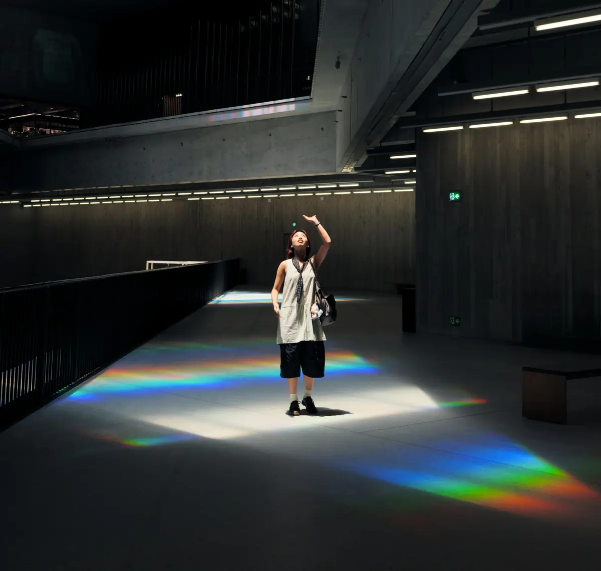

Innovate without compromising your values.
I help museum and tourism leaders cut through the AI noise and make decisions their public can trust.
- Strategy workshops
- Audience research
- AI governance
- Staff training
Who is this for?
Cultural Institutions
GLAM: Galleries, Libraries, Archives, Museums
Strategic clarity as your institution evolves
I bring the evidence, you make informed choices. Together, we’ll work through complex trade-offs around visitor-facing AI, programming, fundraising, and digital transformation.
Explore workshops & deliverables →
Photo: Cai Fang / Unsplash, at M+, Hong Kong
Tourism & Travel Brands
Guest Trust in Phygital Space
Cultural insights for a better guest experience
Travelers see right through performative values. We’ll deepen their trust by making the right calls on AI tools, data governance, and vendor selection across your digital stack and service supply chain.
Explore projects & deliverables →Photo: Tatjana Petkevica / Unsplash, Pink Street, Lisbon
Why trust me?
Trained Anthropologist
Evidence-based audience research
Degrees from the University of Edinburgh and Boston University.
Board Leadership
Years at the helm, not just advising from outside
11 years of combined board service at cultural organizations.
Marketing Leader, AI Vendors
I've sold what I now help you govern
10+ years in AI software. IAPP-certified AI Governance Professional (AIGP).
“I can’t speak highly enough about the level of care, thoughtfulness, and strategic vision she brings… She’s a creative problem solver with strategic clarity and the added bonus of being lovely to work with.”
“Anne is a brilliant and delightful professional to collaborate with. Her positive attitude, creativity, keen observation, and excellent listening skills make her an outstanding asset to any team.”
“From day one, Anne brought heart and discipline to everything she touched… she set the bar for how work should be managed, reported, and communicated.”
Writing
All posts →


Newsletter
If you can't use it, I don't send it.
Occasional dispatches on responsible AI, culture and policy.
Subscribe on Substack (opens in a new tab)Let's talk
Get unblocked this week
I offer 30-minute consultations at no charge for boards and leadership teams.
Book a call